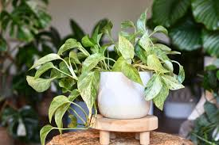
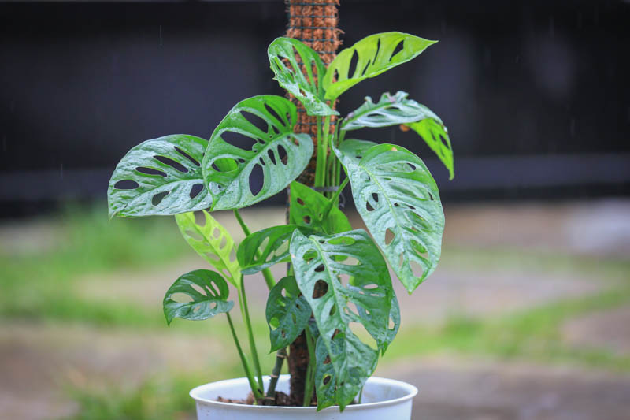

Pothos
- Sunlight: bright and indirect light
- Water: 1-2 weeks when 1-2 inches of top soil is dry
- Soil: well draining, nutrient-rich
Tropical plants thrive in warm and humid environments. Tropical plants need well draining soil, bright and indirect sunlight, and regular misting and watering when topsoil is dry.
For more information on growing tropical plants indoors click the button below:
Learn More
